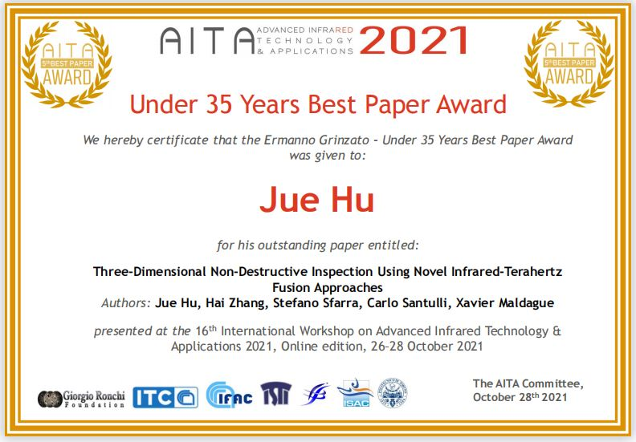

Jue Hu
UESTC & Laval University
Research Interests
- Deep Learning
- Data Fusion
- Terahertz Imaging
- Composite Laminates
Contact
CV
-
University of Electronic Science and Technology of China - Ph.D.
Research Topic Feature Fusion Framework for Quantitative Nondestructive Evaluation and Multi-physics Imaging
-
Université Laval - Research Intern
Research Topic Novel Infrared-Terahertz Fusion Technique for Fusion Imaging on Cultural Heritages and Natural Fibre Composites
Typical Projects
-
[Case 1] Pattern deep region learning for crack detection in thermography diagnosis system Demo
- Physics：Eddy current & Infrared thermography
-
[Target] Micro-crack detection on the metallic materials
[Problem] Disturbance caused by the complex surface situation
[Contribution] A new deep learning method based on region patterns for micro-crack detection on eddy current thermography (ECPT)
[Paper] One work published on Metals Invited talk on FENDT2019
-
[Case 2] Autonomous dynamic line-scan continuous-wave terahertz non-destructive inspection system combined with unsupervised exposure fusion Demo
- Physics：Continuous-wave terahertz & Long-wave IR
-
[Target] Dynamic line-scan imaging on the cultural heritages
[Problem] Unbalanced exposure caused by the size of CW THz actuator
[Contribution] A new autonomous dynamic line-scan non-destructive inspection system combining with CW THz imaging and unsupervised exposure fusion
[Paper] One work published on NDT & E Int Oral presentation for WCNDT2020
-
[Case 3] Novel infrared-terahertz fusion 3D non-invasive imaging of plant fibre-reinforced polymer composites Demo
- Physics：THz-TDS & Infrared thermography
-
[Target] Three-dimensional imaging on the plant fibre-reinforced polymer (PFRP) composites
[Problem] High-dimensional feature extraction and information fusion cross different physics fields
[Contribution] The first infrared-terahertz 3D imaging technique for inspection and evaluation of two plant fibre-reinforced polymer composites using multiphysical imaging and fusion
[Paper] Research paper published on Composites Science and Technology Best Paper Award of AITA2021
Selected Publications
-
Hu J, Zhang H, Sfarra S, Santulli C, Tian G and Maldague X. Novel infrared-terahertz fusion 3D non-invasive imaging of plant fibre-reinforced polymer composites[J]. Composites Science and Technology, Elsevier, 2022: 109526. (SCI检索中科院一区，IF:9.879)
-
Hu J, Zhang H, Sfarra S, Pivarčiová E, Yao Y, Duan Y, Ibarra-Castanedo C, Tian G and Maldague X. Autonomous dynamic line-scan continuous-wave terahertz non-destructive inspection system combined with unsupervised exposure fusion. NDT E Int. 2022, 132, 102705.(SCI检索中科院一区，IF:4.683)
-
Fernandes H, Zhang H, Quirin S, Hu J, Schwarz M, Jost H and Herrmann H. Infrared thermographic inspection of 3D hybrid aluminium-CFRP composite using different spectral bands and new unsupervised probabilistic low-rank component factorization model[J]. NDT & E International, Elsevier, 2022, 125: 102561. (SCI检索中科院一区, IF:4.683)
-
Hu J, Zhang H, Sfarra S, Gargiulo G, Avdelidis N P, Zhang M, Yang D and Maldague X. Non-destructive imaging of marqueteries based on a new infrared-terahertz fusion technique[J]. Infrared Physics & Technology, 2022: 104277. (SCI检索中科院二区，IF:2.997)
Award
-
